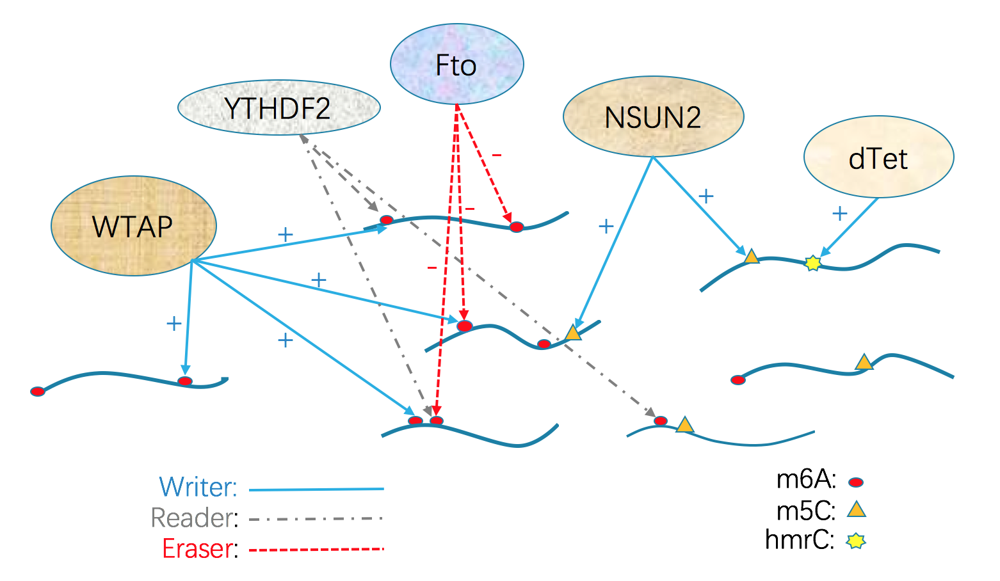

What is TREW database?

TREW is an acroname for the epitranscriptomic Target of Reader, Eraser, and Writer. It is a project of online service prividing the query, visualization, and download of the epitranscriptomic target information from high throughput evidence. The TREW database collects 602230 genomic evidences for the genomic locations of epitranscriptomic target sites of 14 regulators on 5 different modifications.
- Use the database query function.

The database query can be simply used by input the gene symbol from NCBI into the query bar. A vague match of the gene symbol is conducted by default. The server will return 2 tables, the first table on the left contains the summary information of the relationship between the query genes and the epitranscriptomic regulator. Each row in the left table represents the existence of recorded evidence between the gene and regulator. The rows of the left table can be selected, and the selected rows will show its detailed genomic information at the table on the right.
- The explanation of the collumn information in the left table.
Regulator: The regulator of the epitranscriptomic target.Target_Gene: The gene targeted by the regulator.Type: The regulation type of the regulator, can be reader, writer, or eraser.Mark: The type of modification that the regulator acts on.Positive_#: The number of positive sites recorded in the database. For MeRIP and RNA Bisulfite data, The positive evidence is defined by the significant differential methylated (fisher exact p value < .05) sites between control and perterbation group in the direction of theoratical expected. For other data types, all the recorded sites are considered to be positive. Users can apply more rigrious filters(ex. by fdr) on the statistical significane to tackle with the multiple hypothesis test issues.Reliability: The Positive_# divided by the total number of sites that has the perterbation in the expected direction.
- The explanation of the collumn information in the right table.
Meth_Site_ID: The id of the methylation target sites used in the database.Meth_Range_ID: The id of the ranges used in the database.
P.S. Each target sites could include multiple ranges in the MeRIP data which the peak is called from exomePeak, and each row in this table represents one genomic range, so, for a given site, it can corresponds to multiple rows in the right table. For other data forms, the relashionships between sites and ranges are one to one.
For the rest of column information in the right table, please refer to the documentation of the SQL database.
Question: How can I query the result of All the genes?
Answer: To search all of the genes, you can input nothing and click search, or you can input
.and click search.
- Apply specific filters on the query.

12 select bars can be shown after clicking the More options button. Users can define their filters and add restrictions to the returned query results. Below is the explanation for the contents of each of the select bars.
Marks: The types of RNA modifications.Regulators: The roles or names of the regulators.Species: The species of the sample source.Include liftover: Weather include the liftOver sites from mm10 to hg19, default is include.RNA types: The type of RNA that the target resides.RNA regions: The local region of the targeted RNA.Cell lines: The cell line of the source sample.Technique: Select 5 categories of the high throughput experiments applied in this database.Statistical significance: Select the filter used for the statistical significance of the differential methylation in MeRIP and RNA bisulfite samples; by selecting any filter, only positive results will be reported in the tables below.Consistency: Wheather select the sites that are consistent between multiple technical/biological replicates. The defination of consistent is that the methylation fold change direction is consistent between pairs of biological/technical replicate.
For sample with no biological/technical replicate, their reported sites are considered to be inconsistent.
Motif restriction: Wheather to choose sites that are only approximate (within 10 nt) to the consensus motif. This argument is only effective for 2 types of methylations: m6A and hmrC, they have reported motifs DRACH and UCUCC.Stop codon restriction: Wheather to choose sites that only approximate (within 10 nt) to the stop codon.
- Download the complete table returned by the query.

The information of the returned tables can be downloaded through a download button. The download button is visible under the select bars after click the button of More Options. The downloaded table is in csv format.
The downloaded table contains merged information of the left table and the right table, each row of the downloaded table represents a range on the genome. The scope of the sites contained in the download can be tailored by the select bar filters.
- Use the original SQL database.

The TREW database is public accessible through MySQL and sqlite forms. The diagram above demonstrates the structure of the database. The information contained under Each field is explained below.
- Table Genome_Location.
Meth_Range_ID: The uniqe ID given each genomic ranges in this database.Meth_Site_ID: The uniqe ID given each modification sites.Range_start: The start of the range.Range_width: The width of the range.Strand: The strand of the range.Chromosome: The chromosome of the range.Note_t1: Note for table 1.
- Table Sites_Info.
Methylation_ID: Reference on theMeth_Site_IDof the first table.Diff_p_value: The p value returned by the inference of differential methylation in MeRIP and RNA bisulfite samples.Diff_fdr: The false discovery rate computed based on Benjamini-Hochberg method within each sample.Diff_log2FoldChange: The log2 transformation of the methylation level fold changes.Gene_ID: The NCBI gene symbol for the methylated genes.Source_ID: The unique ID given by each set of high throughput experiment used in this database.Consistency: Wheather the fold change directions are consistent between mutiple biological/technical replicates.Log2_RPKM_wt: Expression level (RPKM in input data) for the genes under wt condition.Log2_RPKM_Treated: Expression level for the genes under Treated condition.Overlap_UTR5: Wheather the site overlapped with 5’UTR (5’untranslated region).Overlap_CDS: Wheather the site overlapped with CDS (protein coding sequence).Overlap_UTR3: Wheather the site overlapped with UTR3 (3’untranslated region).Distance_ConsensusMotif: The distance from the site to its nearest consensus motif.Distance_StartCodon: The distance from the site to its nearest start codon.Distance_StopCodon: The distance from the site to its nearest stop codon.Note_t2: Note for table 2.
- Table Source_Info
DataSet_ID: Reference on theSource_IDof the second table.Genome_assembly: The reference genome.Modification: The type of modification or marks.Technique: The high throughput method.Target: The protein regulator act on the modification.Target_type: The type of the protein regulator(either writer, eraser, or reader).Perturbation: The method of the perturbation of the protein for the treated group.Date_of_process: The date which the raw data is processed.Paper: The publication which generated the sample.Cell_line: The Cell line used by the sample.Treatment: The additional treatment other than protein perturbation.Species: The species of the sample.LiftOver: Indicate The data is liftOver from other species to human.Computation_pepline: The computational pepline used to process the raw data.Note_t3:
- Table Raw_data_records
GEO_RUN: The GEO accession for the individual fastq data.Data_ID: Reference on theSource_IDof the second table.IP_Input: Wheather the sample is Input or IP for MeRIP.Genotype: Wheather the sample is control or treated.Replicate: How many biological/technical replicates does the sample involve.
- Contact Information
Xi’an Jiaotong-Liverpool University; 111 Ren’ai Road; Suzhou Dushu Lake Science and Education Innovation District; Suzhou Industrial Park; Suzhou; P. R. China; 215123;
JiaMeng: Jia.Meng@xjtlu.edu.cn; ZhenWei: Zhen.Wei@xjtlu.edu.cn